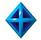

เมื่อวันที่ 1 ตุลาคม 2554 กฟผ. ได้มีการตั้งสายงานรองผู้ว่าการพัฒนาธุรกิจ (รวธ.) ขึ้นมาใหม่ จึงมีการปรับเปลี่ยนโดยกำหนดให้หน่วยงานโครงการฯ ในสายงานผู้ช่วยผู้ว่าการผลิตไฟฟ้า 4 (ชฟฟ4.) ได้ย้ายเข้ามาสังกัดใน รวธ. และเปลี่ยนชื่อเป็น สายงานผู้ช่วยผู้ว่าการโครงการธุรกิจเดินเครื่องและบำรุงรักษา (ชธค.) มีหน้าที่รับผิดชอบงานโครงการธุรกิจเดินเครื่องและบำรุงรักษาโรงไฟฟ้า ปัจจุบันมีหน่วยงานที่กำกับดูแลโครงการธุรกิจเดินเครื่องและบำรุงรักษา 5 แห่ง ดังนี้
1.โครงการเดินเครื่องและบำรุงรักษาประจำโรงไฟฟ้า บริษัท ผลิตไฟฟ้า ราชบุรี จำกัด ( อค-บร. )
2.โครงการเดินเครื่องและบำรุงรักษาโรงไฟฟ้า บริษัท ราชบุรีเพาเวอร์ จำกัด ( อค-บพ. )
3.โครงการเดินเครื่องและบำรุงรักษาโรงไฟฟ้าพลังน้ำ เขื่อนน้ำงึม 2 สปป.ลาว ( อค-บน. )
4.โครงการเดินเครื่องและบำรุงรักษาโรงไฟฟ้าและหน่วยผลิตน้ำเย็น บริษัท ผลิตไฟฟ้าและน้ำเย็น จำกัด ( คกบผ. )
5.โครงการเดินเครื่องและบำรุงรักษาโรงไฟฟ้าพลังความร้อนลิกไนต์หงสา สปป.ลาว ( อค-บส. )
 กฤติเดช ธุวานันท์เดโช